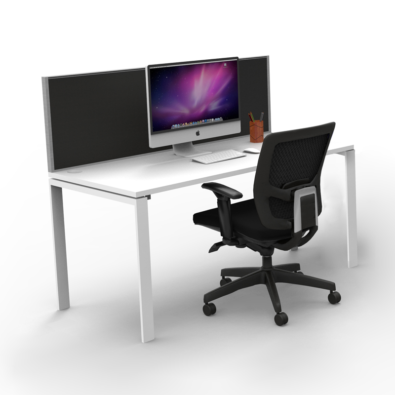
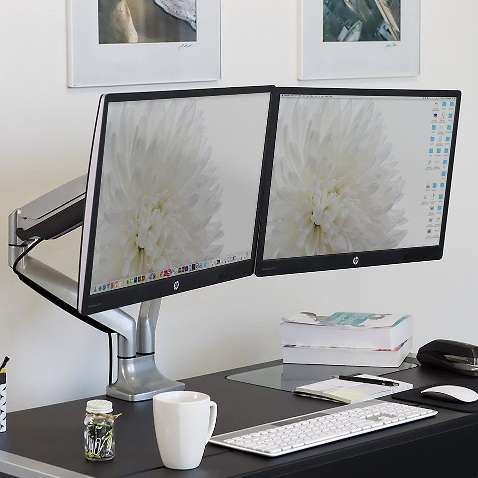
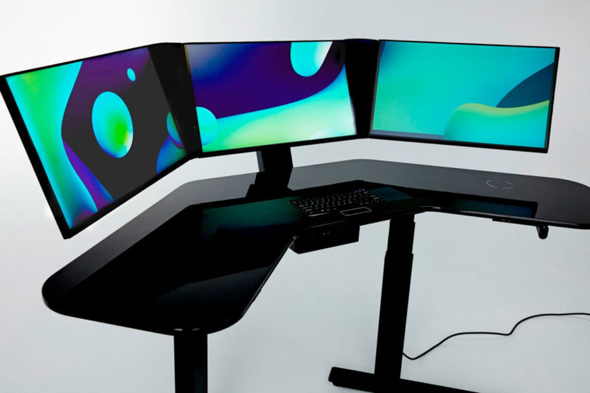
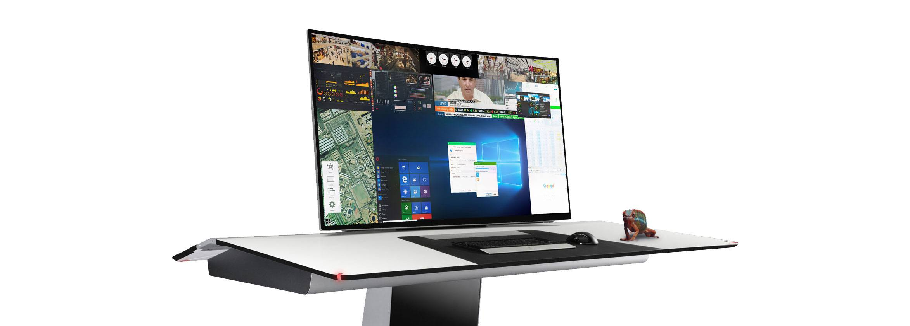
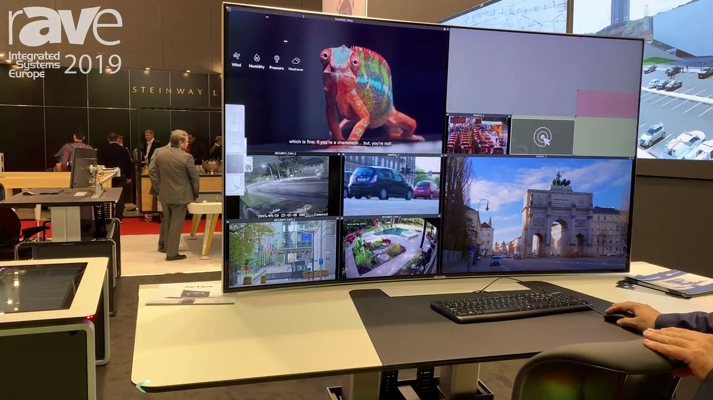

Welkom!
Op deze website kun je meer informatie vinden over de vragenlijst die u invult met betrekking tot de meldkamer. Hieronder ziet u heel wat links waar u op kunt klikken. Deze hebben meestal ook de naam van de vraag zoals deze in de enquête staat. Wanneer u hier op klikt, zal u tekst, foto's,... vinden die de vraag hopelijk meer verduidelijken. Als test kun je hieronder bv. eens een keer klikken op "Klik hier voor een test!".
1 scherm:
2 schermen:
3 schermen:
Het voordeel van 1 groot scherm, is dat er sneller gewerkt kan worden via een clean desk principe. Er wordt dan nog maar gebruik gemaakt van slechts 1 scherm, 1 toetsenbord en 1 muis! Omwille van bepaalde redenen kan u er toch voor kiezen om met meerdere schermen te werken.
Er wordt momenteel bekeken of er omgeschakeld kan worden naar een persoonlijke videowall. Dit betekent dat je gewoon alle nuttige informatie kan ophalen op slechts 1 scherm! Momenteel werken we met verschillende pc's die herleidt worden naar 6 verschillende schermen. Via bepaalde hardware en software is het mogelijk om al deze pc’s nu naar slechts 1 scherm te herleiden. Operators kunnen dan zelf kiezen welke schermen ze willen openen op hun monitor. Geseb is momenteel een bedrijf dat deze software aanbiedt! Het grootste voordeel van deze persoonlijke videowall is dat u zelf kiest wat u te zien krijgt! U kan zelfs deze informatie plaatsen op het scherm zoals u zelf wil! Dit systeem gaat dit ook onthouden. Wanneer u de volgende keer aanmeldt, ziet u terug dezelfde lay-out zoals u ze de vorige keer hebt gemaakt! Deze lay-out is ook zeer makkelijk en efficiënt te maken door gewoon de noodzakelijke informatie te slepen naar het scherm en deze met de muis groter of kleiner te maken. Meer informatie op deze website. Dit is een voorbeeld van hoe een persoonlijke videowall eruit zou kunnen zien:
Hieronder ook nog een YouTube video over Gesab VideoWall waardoor je een beter zicht kan krijgen over deze technologie:
Je kan de verschillende schermen verplaatsen, over elkaar plaatsen, van grootte veranderen,… Zo kan je bv. kiezen een webbrowser op je scherm te slepen, daarnaast surveillance camera's te plaatsen, hieronder een opzoeksysteem waar je bv. nummerplaten kunt opzoeken, enz. Dit zou er zo kunnen uitzien:
